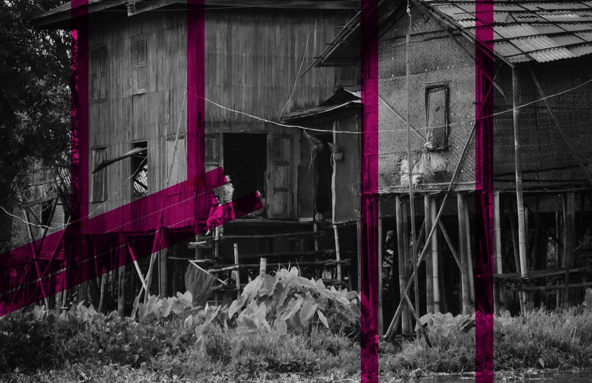
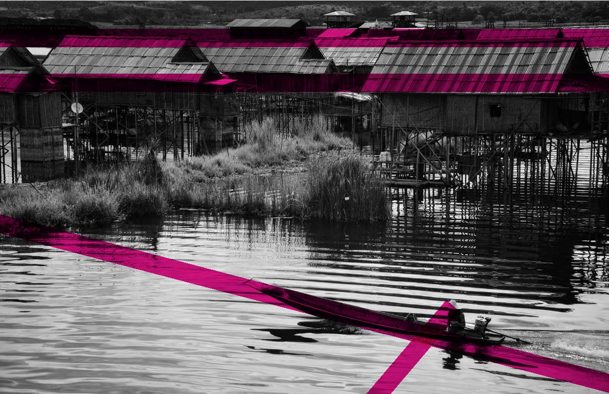
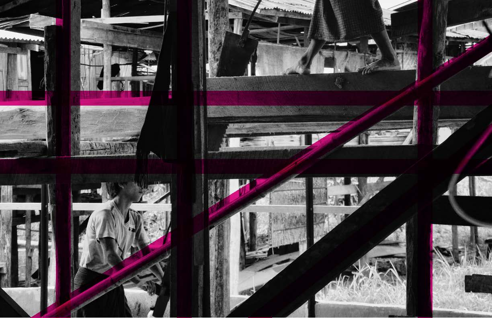

COMPOSITION Zine
The Rule of Thirds is a famous heuristic that is widely used in photographic composition. In my photography, I often break the Rule - I believe that it is a useful tool, but can significantly limit creativity when applied without intention. Jeff Hilnbrand and I created a zine called “Composition” for Facebook Analog Lab’s Zine Fest, highlighting structural and psychological composition lines in my work.
  